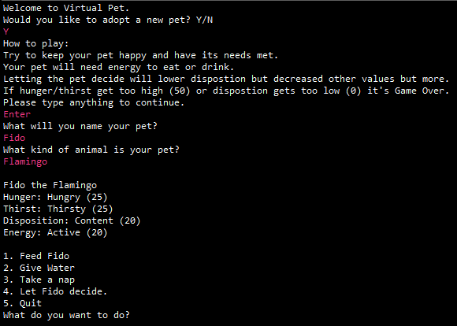
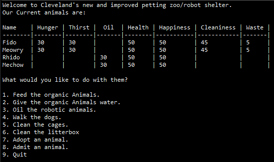
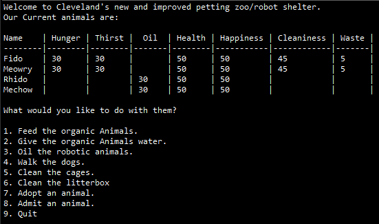
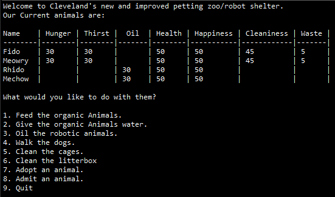

 


Virtual pet is an app where you create, then take care of, a virutal pet. You have to balance the values of the pet in order to keep it from dying or running away.
Virtual pets shelter is an app that puts virtual pets into a shelter. It takes the previous app and puts them into a class where you can manage more than one pet.
Virtual pets amok takes what virtual pet shelter did but instead categorizes pets between organic and robot. Organic pets have to be fed and water while robotic one have to be oil periodically.